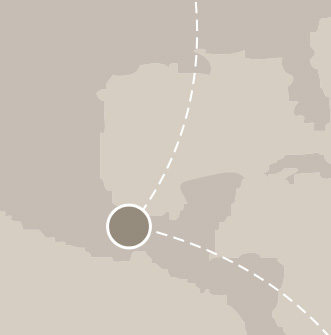
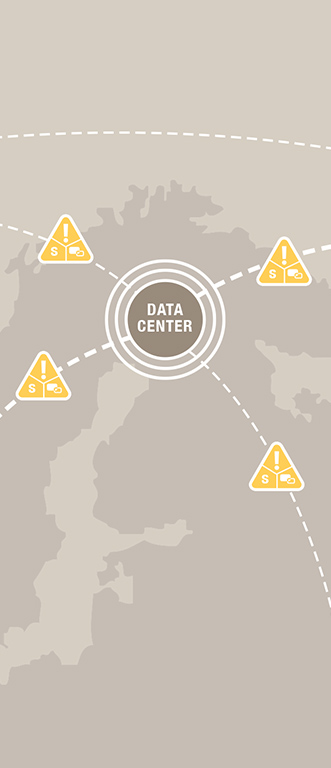
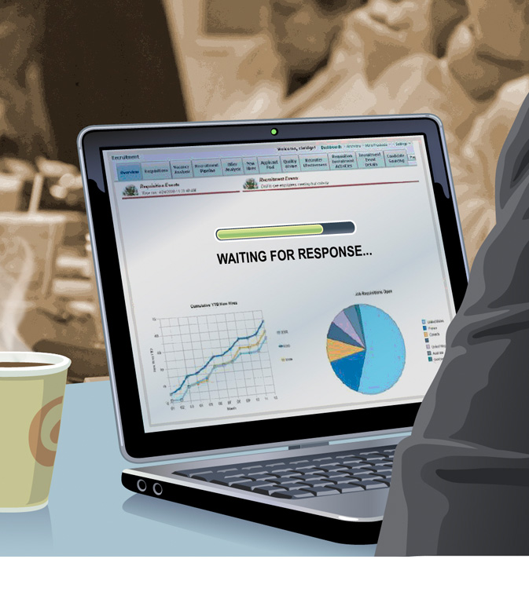
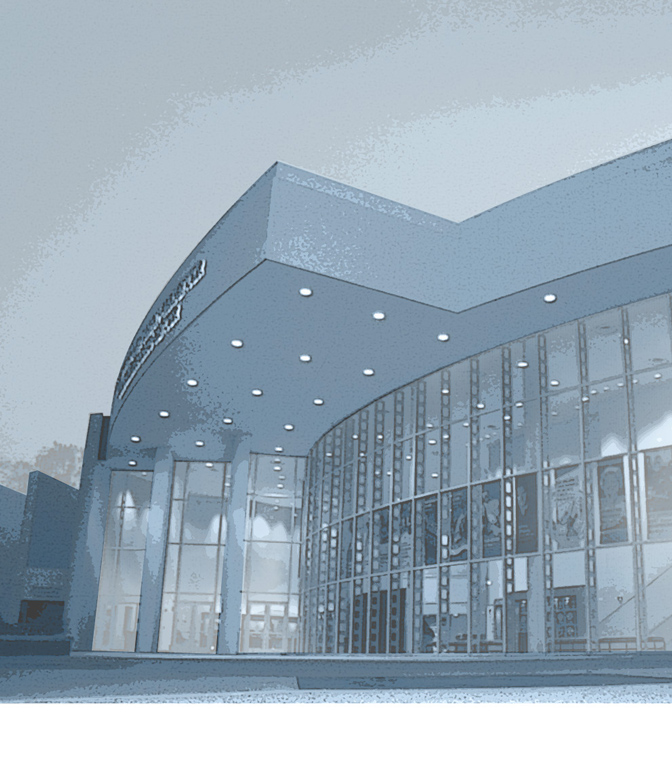

BUSINESS ANALYTICS
Capturing New Opportunities

HUMAN CAPITAL
MANAGEMENT Managing Transactions,
Workforce Services
MANAGEMENT Managing Transactions,
Workforce Services
CUSTOMER EXPERIENCE
Differentiating
Across Customer
Interactions
Across Customer
Interactions
PROJECT PORTFOLIO
MANAGEMENT Managing for Optimal
Resource Mix
MANAGEMENT Managing for Optimal
Resource Mix
ENTERPRISE
CONTENT
MANAGEMENT Managing Content
Lifecycle
CONTENT
MANAGEMENT Managing Content
Lifecycle
SUPPLY CHAIN
MANAGEMENT Transforming Supply
Chains into Value Chains
MANAGEMENT Transforming Supply
Chains into Value Chains




Lost Opportunities Lead to Lost Sales
Less Downtime = More Productivity

Communication Breakdown Leads to Unsatisfied Customers
Inefficient Data Centers
Diminish the Company’s Value
Diminish the Company’s Value
SERVICE-ORIENTED
ARCHITECTURE Providing Integration
Business-to-Business
ARCHITECTURE Providing Integration
Business-to-Business
The Quality of Operations and Infrastructure Define the Data Center

Operations Won’t Matter If the Infrastructure Is Not Optimized
Technology Silos, Low Resource Utilization, Virtual Sprawl
Complexity Causes Underutilization, Security Holes, and Delays
Unplanned Growth Exposes the Business to More
Revenue, Compliance, Security, and Brand Risk
Revenue, Compliance, Security, and Brand Risk
Increasing Cost of Infrastructure Implies Decreasing Capability to Innovate
Oracle’s Optimized Data Center Offers a Roadmap
Consolidate By a Factor of 100:1. Reduce Deployment Cost by 75 Percent
Process Secure Transactions 3x Faster
Provide 10x to 50x Faster Response Times and Throughput